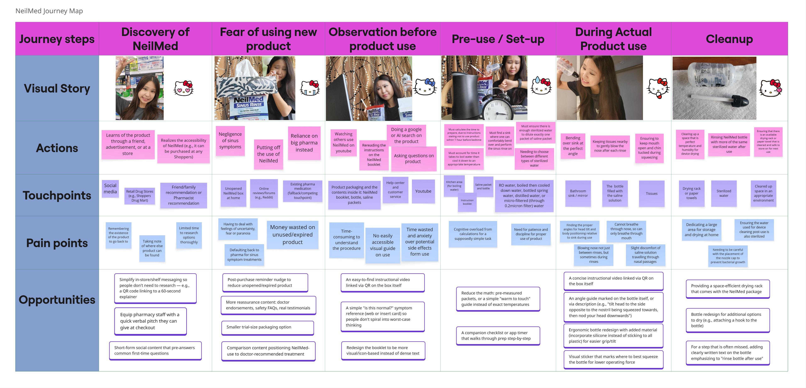

✨ Jump to a Specialty Track ✨
Hi, I'm TINA TANG .
I investigate how people interact with technologies and how human needs can be translated into better products and systems, from health systems to nanotechnology.
Selected Work
A collection of projects spanning UX research, human factors, healthcare, materials science, nanotechnology, and interdisciplinary design.
✦ HUMAN
Design and prototyping focused around human interaction, usability assessments, and ergonomics.

End-of-Life Decision Tools
A Human Factors study assessing tools and interfaces for end-of-life healthcare choice architectures.
View Case Study 📋
WeChat Customer Profile
Targeted user profile design and accessibility study mapping out a 73-year-old active user's interactions.
View Case Study 📋
Grandmother Reading Setup
Human Factors & usability assessment parsing physical postural ergonomics via RULA / REBA frameworks.
View Case Study 📋
FitBud App Design
Health and fitness app concept introducing an interactive system with custom virtual personal training.
View Case Study 📋✦ INNOVATION WITH TECHNOLOGY & NANOSCIENCES
Creative experiments utilizing hardware engineering, nanotechnology solutions, and bio-systems.

Smart Hydrogel Detection
Development framework for an early-stage chemical indicator tracking physiological markers on diabetic foot ulcers.
View Case Study 📋
Water Hardness Hardware
Prototyping sensor matrices alongside an IoT systems layout for dynamic building monitoring setups.
View Case Study 📋✦ PRODUCT EVALUATION
Rigorous diagnostic tracking, auditing compliance standards, and validating human interface criteria.

NeilMed Accessibility Audit
Comprehensive standard-compliance screening analyzing human workflows and hardware accessibility loops.
View Case Study 📋
ScrewHolder A/B Testing
Formative usability validation evaluating ergonomic grip speed and error metrics across variants.
View Case Study 📋✦ KNOWLEDGE SYNTHESIS
Consolidating literature, framing cross-disciplinary vectors, and outputting evidence pathways.

CONTACT
Let's connect.
I'm interested in opportunities involving UX, human factors, healthcare, technology, and interdisciplinary problem-solving.